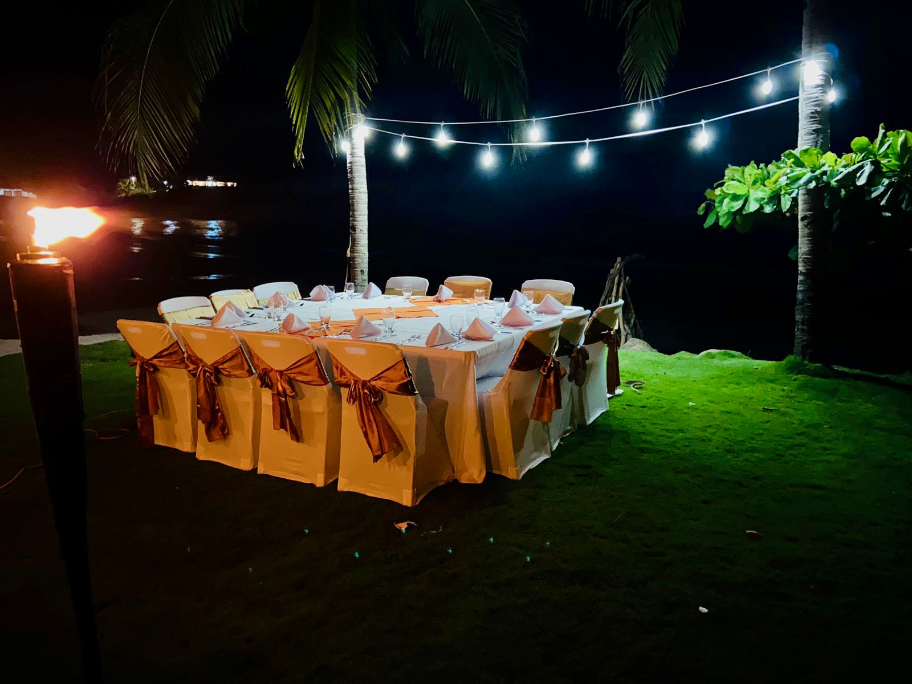
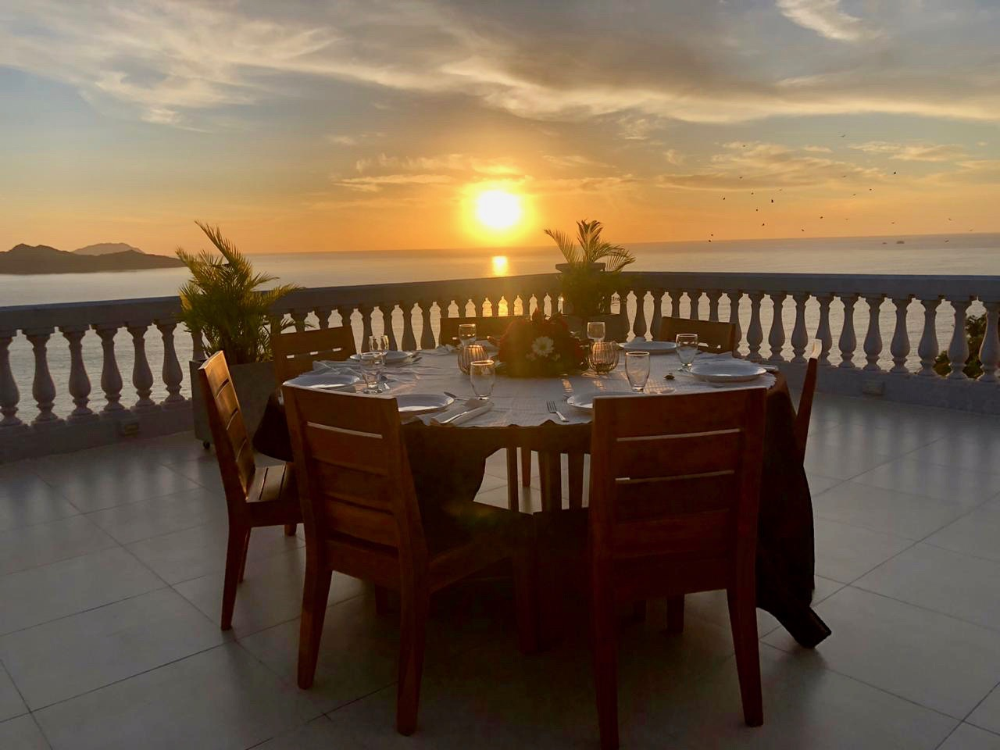
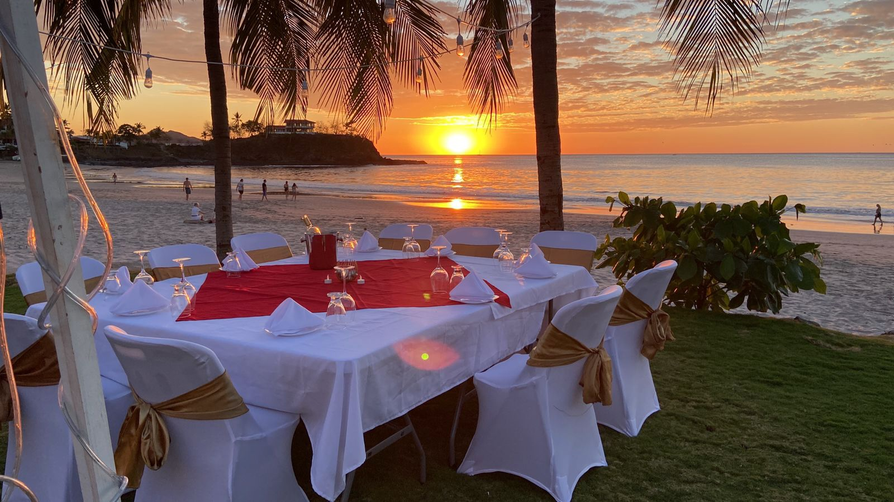

Golden hour
Beachside dinners
Sunset, sea air, and a beautifully served meal without missing a moment of the view.
Personalized with passion and precision
From intimate dinners to full-scale celebrations, Leo’s team makes room for you to enjoy every moment.
Catered to your choices
No gathering is too formal or relaxed, too intimate or expansive. Indoors or outdoors, every experience is shaped around your setting, style, and appetite.

Golden hour
Sunset, sea air, and a beautifully served meal without missing a moment of the view.

At your place
A restaurant-caliber experience brought directly to your vacation home or private residence.

Gather together
Weddings, anniversaries, birthdays, holidays, and milestones planned with care.
More ways to gather
Birthdays, anniversaries, weddings, and life’s milestones become easier to enjoy when Leo’s team handles the meal, setup, service, and cleanup.
Holiday gatherings and New Year celebrations receive the same thoughtful planning, polished presentation, and personalized menu attention.
Let Leo take meal planning off your plate with flexible breakfast, lunch, dinner, and refreshment service for working groups and wellness stays.
Whether it’s a sunset dinner on the beach, a terrace table at twilight, or a casual spread in your home kitchen, no delicious detail is spared.
Peacefully private or gala grande, indoors or outdoors, Leo’s team can adapt the setting, service style, and cuisine to suit your gathering.
Our gift is your freedom
Leo’s team can coordinate menu planning, preparation, table setup, service, and cleanup. Availability and specific inclusions are confirmed for each event.
Start planning